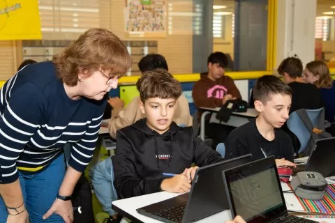

Actualmente, la captación de alumnos del centro presenta las siguientes limitaciones:
- El único método actual es la jornada de puertas abiertas presencial anual.
- No hay presencia digital atractiva para familias nuevas.
- Se limita mucho el público potencial (no se puede acceder online).
- No hay material audiovisual ni formularios digitales de contacto.

| Diagnóstico | Propuestas de Soluciones Digitales | Objetivos del PTD |
|---|---|---|
| El único método actual es la jornada de puertas abiertas presencial anual. | Diseñar una web moderna y responsive con sección de "Futuros alumnos". | Aumentar la visibilidad y accesibilidad del centro. |
| No hay presencia digital atractiva para familias nuevas. | Crear un vídeo interactivo en 360° para visitas virtuales. | Ofrecer una experiencia inmersiva y accesible. |
| No hay material audiovisual ni formularios digitales de contacto. | Implementar formularios de preinscripción y solicitud de información. | Automatizar la recogida de datos y facilitar el contacto. |
| Se limita mucho el público potencial (no se puede acceder online). | Web moderna y responsive con sección de "Futuros alumnos". | Ampliar el alcance y facilitar el acceso a la información. |
Acciones a implementar:
- Crear una página atractiva: vídeos, imágenes, valores del centro.
- Formulario de contacto para familias interesadas.
- Publicar visita virtual o vídeo de puertas abiertas.
- FAQs para familias nuevas.
Recursos necesarios:
- Cámara 360º o equipo audiovisual.
- Plataforma de newsletters y formularios.
- Colaboración de maestros y alumnos.
Temporalización:
- Preparación: 1 mes
- Implementación: 3-4 semanas
Responsables:
- Coordinación pedagógica
- Coordinador TIC
- Equipo de comunicación
Medidas de seguimiento y evaluación:
Se evaluará el cumplimiento de los objetivos mediante indicadores clave como:
- Número de formularios de contacto recibidos.
- Frecuencia de visitas a la página de captación.
- Interacción con el contenido audiovisual (visitas virtuales, vídeos).
La revisión se realizará trimestralmente con:
- Informes de formularios enviados.
- Encuestas a familias interesadas sobre la experiencia digital.
- Control de incidencias técnicas y tiempos de respuesta.
Formulario de Contacto
Utiliza este formulario para solicitar información sobre el proceso de admisión o para expresar tu interés en el centro.